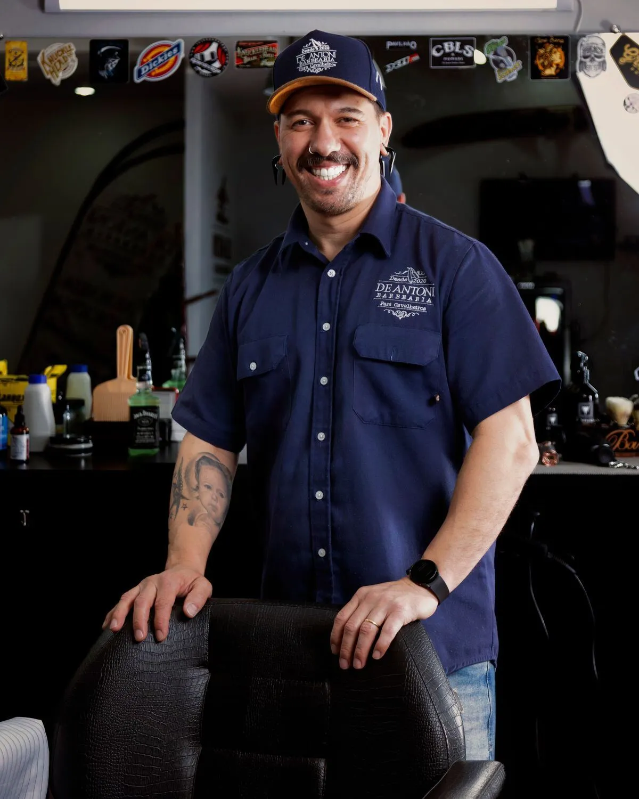
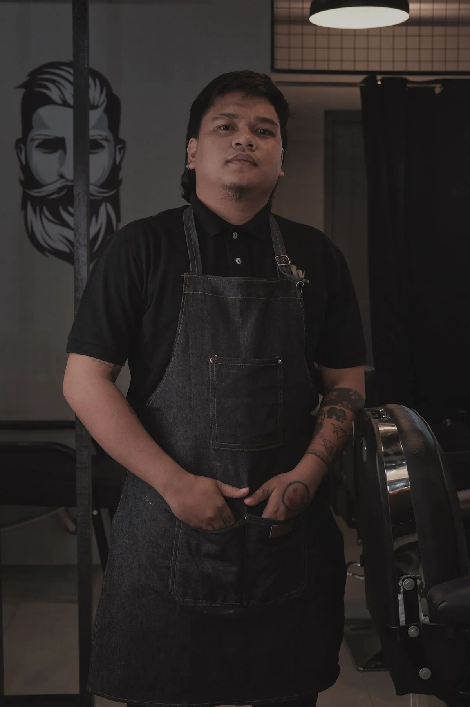
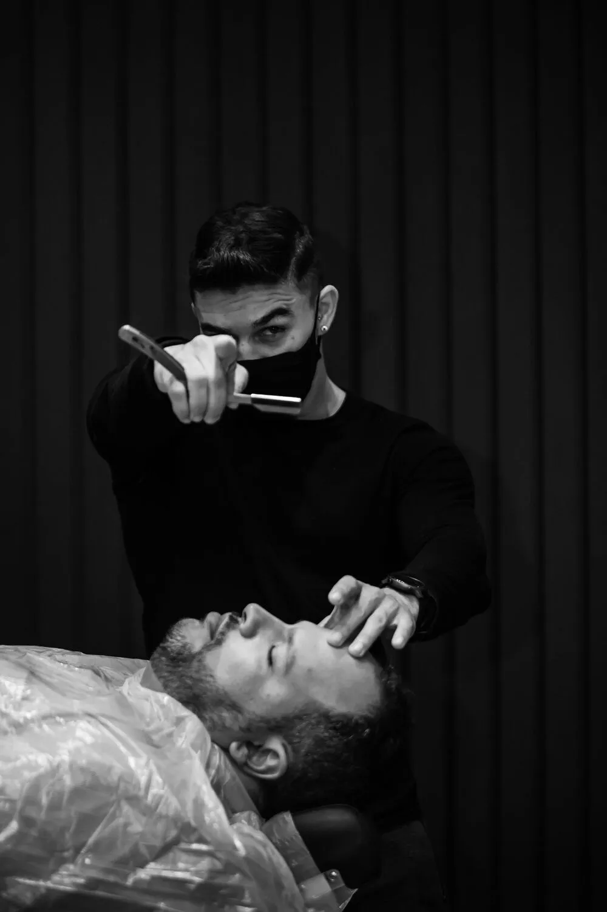
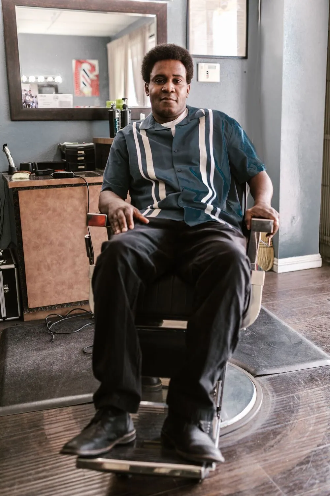
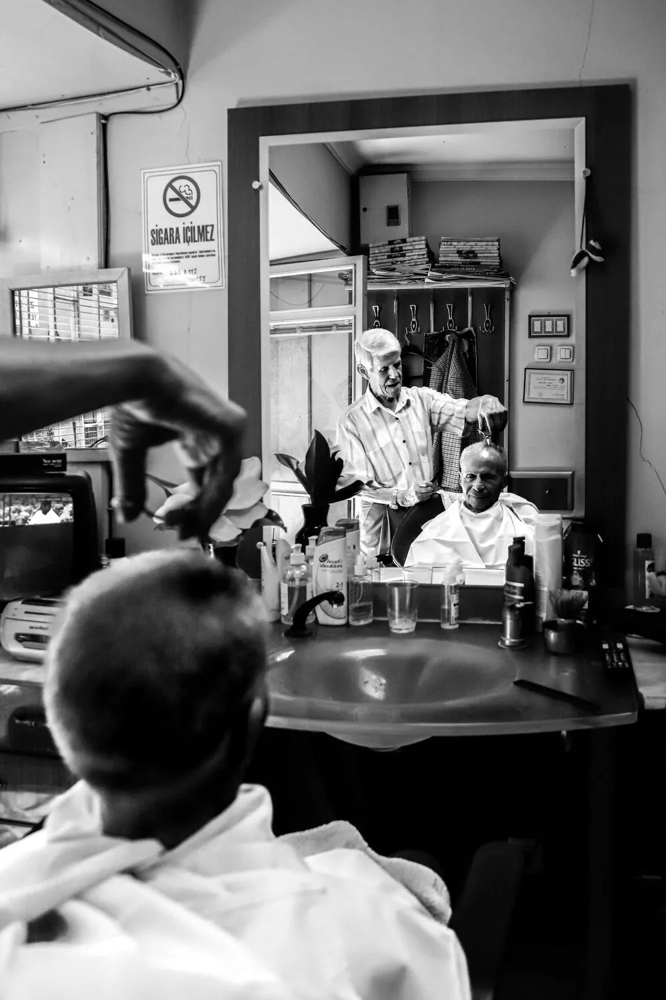
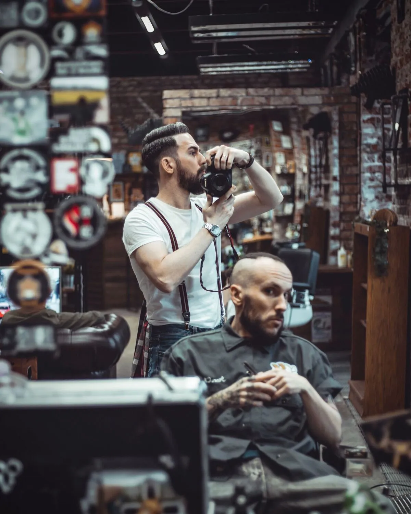
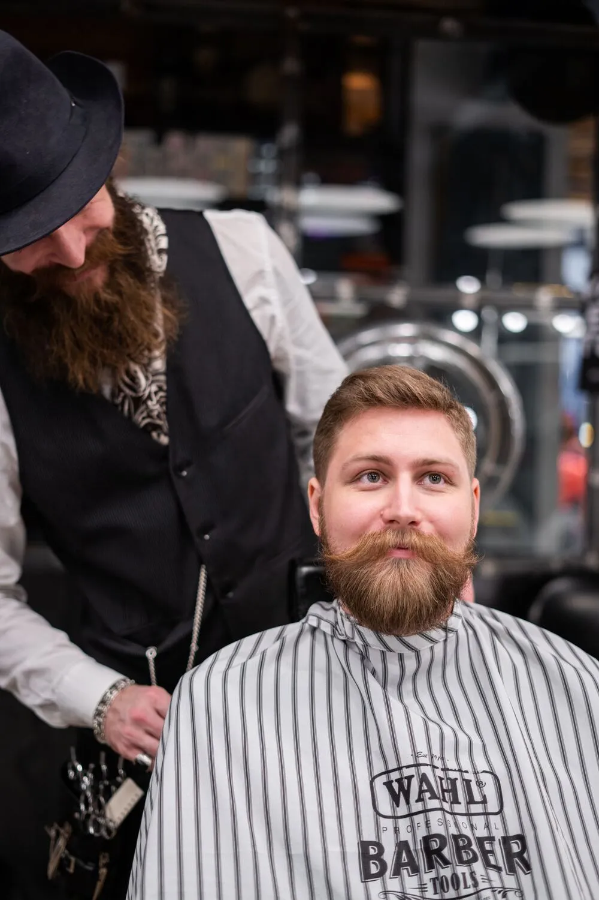
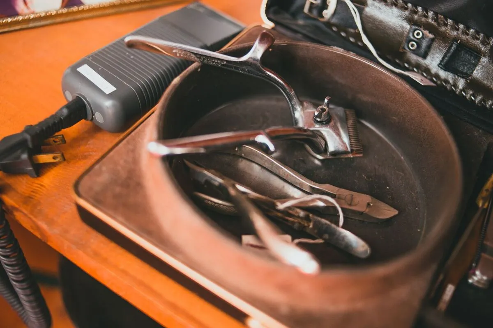

07
Conversa de Quintal
Cabelo curto, lateral reta, franja natural. Pra quem senta e fica três horas.
Tomás
R$ 80
Vila Madalena. Desde 1987.
Barbearia de bairro, no mesmo endereço há 38 anos. Cadeira marcada, café servido, sem pressa.
Existe barbearia que entra na conversa do bairro e barbearia que entra na novela. A Casa do Corte tá aqui há 38 anos pela primeira razão.
A gente corta cabelo. Cabelo curto, cabelo comprido, cabelo crespo, cabelo que a avó cortou em casa durante 12 anos. Aqui senta quem quer conversar e sair com a cabeça leve.
Sem música alta, sem cerveja na cadeira, sem espelho coberto de adesivo. A navalha e o café aparecem quando precisam aparecer, e só.
Livro de Cortes
07
Cabelo curto, lateral reta, franja natural. Pra quem senta e fica três horas.
11
Topete alto, degradê médio, bigode desenhado. Pra quem fala alto.
14
Corte clássico, barba feita a navalha, toalha quente. Inclui café.
18
Repicado médio, franja lateral, produtos pra domar no dia a dia.
23
A consulta. Quinze minutos no balcão definindo forma, tecido, rotina. Depois, o corte.
27
Manutenção, no máximo 30 dias. Mantém forma e barbeiro.

"A cadeira é o confessionário mais barato da cidade."
Cortes estruturados, clássico com twist, barba desenhada.
Cortes que ele gosta · 07 · 11 · 23

"Cabelo crespo merece cadeira e conversa. Não dura 15 minutos."
Texturização, cortes naturais, transição de comprimento.
Cortes que ela gosta · 14 · 18 · 27






"A cadeira é sua na hora marcada. Se atrasar dez minutos, a gente serve o café de novo. Se atrasar trinta, avisa."
Marcar a cadeira →